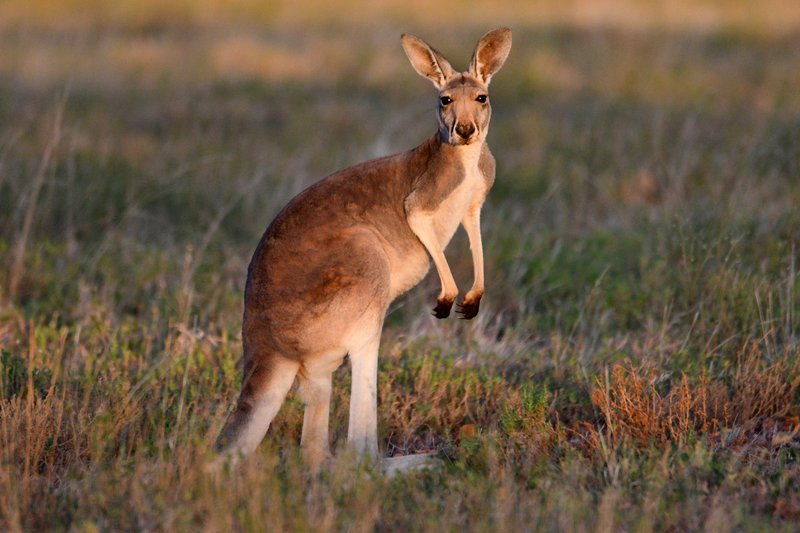

Kangaroo
Large marsupials from Australia that hop on powerful hind legs.
- Species: Macropus rufus
- Diet: Herbivore
- Size: 4-6 ft tall
- Weight: 120-200 lbs
- Life span: 8-12 years
- Habitat: Grasslands, forests
- Found: Australia
- Can be pet: No
Trivia: Kangaroos can cover up to 25 feet in a single leap.